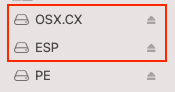
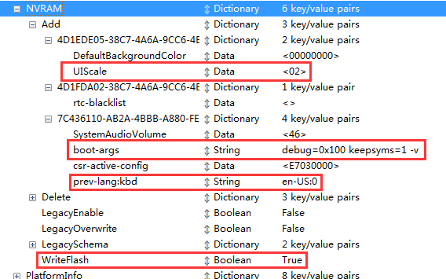
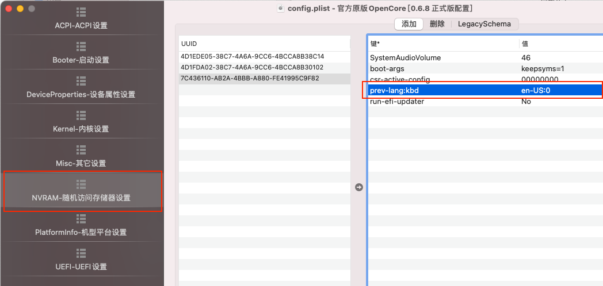
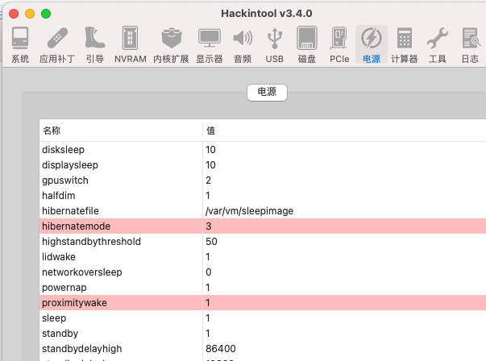

Lggram-15z990 黑苹果安装
1. 目标安装磁盘的准备
在要安装macos的磁盘中进行分区，需要分2个区。
- 第一个是名为ESP的分区（FAT16格式，给300M），用于存放EFI引导文件。
- 第二个存放苹果系统文件（APFS格式，安装期间用苹果安装程序来格式化，普通分区管理工具不支持该格式）。 其实最终安装后的磁盘数量和结构，与安装U盘的格式完全一致。都是两个分区，一个引导，一个放系统数据。
所以安装后会有一个问题，拔掉U盘无法开机，原因就是安装程序只会把系统数据拷贝到目标磁盘的1个分区，另一个负责引导的分区没有被拷入，解决方法就是安装后用PE系统把U盘的ESP中的数据拷贝一份到目标安装磁盘的ESP就OK了
2. 镜像选择Big Sur 11.3
https://osx.cx/macos-big-sur-11-3-20e232-for-opencore.html
3. 安装U盘制作
镜像下载来为xxx.dmg镜像，需要使用TransMac工具来进行烧录，烧录后有2个重要的核心分区：

OSX.CX # 以上面网站域名命名，里面放的是OSX的整个系统数据，包括安装程序。
ESP # 是引导程序所在的分区，里面的EFI可能是Clover或OpenCore引导程序（取决与选择），负责引导程序到苹果安装程序，或引导到PE系统（用于磁盘分区准备）。
4. 引导方案的选择
目前黑苹果主流的引导方案有两套，
1. Clover # 属于第一代方案，以后各类驱动的支持可能会越来越少
2. OpenCore # 属于新的方案，目前很多老的驱动和适配工作会逐步迁移到OpenCore中来
本次安装选择的是OpenCore方案。无论是哪种方案，都是下载对应机型的EFI目录，替换安装U盘ESP分区中的EFI文件夹就好了。 这里有个EFI大全列表：https://blog.daliansky.net/Hackintosh-long-term-maintenance-model-checklist.html ，这里有各类机型的EFI。 本机器用是里面提供的： https://github.com/myd986/LG-gram-14z990-Hackintosh
5. 安装过程语言调整
对安装U盘中替换为适合Lggram 15Z990的EFI后默认为俄文，所以需要对其进行调整。
不管是Clover还是OpenCore方案，EFI下都有一个config.plist，里面的引导参数默认为俄文，所以需要对其进行修改。
详细教程在：https://www.mfpud.com/topics/4446/ 。config.plist文件修改有很多方法，安装xcode后直接利用内置编辑器编辑：只关注prev-lang:kbd就够了

或如果为OpenCore方案，可使用OpenCore Configurator：

最终，调整后的config.plist(主要调整了：通过修改boot-args禁用了开机跑代码，并调整为英语):
6. 问题总结
1. 如果系统完全安装好后，使用U盘ESP启动后，目标11已安装磁盘的ESP貌似也会别同步。
安装后使用U盘启动来测试各类config.plist中的参数，发现每次拔掉U盘后，配置依然会被保留。需要使用Kext Utility来进行缓存清理以便生效。
2. 把config.plist中的NVRAM下的7C436110-xx下的boot-args中的值里的 keepsyms=1被去掉后，开机屏幕亮度会变为最低，且无法调整, 恢复该值后可以恢复。
3. 当Hackintool中，将hibernatemode为0时，且proximitywake也为0时，启动后屏幕无法显示（黑屏），需要合上盖子盖子，稍后再打开才能显示（休眠后再唤醒）。

4. 该系统在lggram15z990上安装好后，进入休眠。当鼠标移动、键盘及其他USB发生事件时，会唤醒休眠。但是如果是以合上盖子的休眠方式，在唤醒后如果没有持续触发事件，稍等片刻后又会进入休眠。
5. 休眠耗电：经过测试，合上盖子12小时掉电为5%，还不错。但上一条提到的USB唤醒频率可能会动态影响耗电量。
6. 其他补丁大全，但就试用了里面的强制深度睡眠的补丁，但试用后无效： https://github.com/daliansky/OC-little